These documents provide a brief
introduction to Maple. We
hope that there is enough information to get the reader started
with Maple in no time. There is a vast library of functions
that the reader may want to explore. It suffices to use the Help menu
in Maple for that. In the text below, Maple codes
are highlighted in blue.
Many of these documents have been used in an introductory course on modelling and mathematical software given at the University of Ottawa.
Consider the polynomial
> (x+y)^2;\[(x + y)^2\]
We note that the commands in Maple are always ended by a semi-colon. The command is executed after having pressed the Enter key.
The symbol % holds the result of the previous operation. So, we can expand the polynomial defined above with the following command.
> expand(%);\[ x^2 + 2 x y + y^2\]
We have used the command expand to compute the square. We can perform all well known algebraic operations on the polynomials.
> %-4*x*y;\[x^2 - 2 x y + y^2\]
> factor(%);\[ (x-y)^2\]
As expected, the command factor factorize the polynomial.
If we want to refer to the basic polynomial \(\displaystyle (x+y)^2\), we do no have to rewrite it each time we want to use it. We can assign \(\displaystyle (x+y)^2\) to a variable.
> u:= (x+y)^2;\[u := (x + y)^2\]
The symbol := is used to assign the content on the right of this sign to the variable on the left of this sign. We can now perform any polynomial operations on \(\displaystyle (x+y)^2\) using u.
> expand(u*x);\[x^3 + 2 x^2 y + x y^2\]
There are basically two ways to define a function in Maple. Each way has its own advantages and disadvantages according to the use that we may want to make of the function. Consider the function \(f\) defined by \(\displaystyle f(x) = \sin(x^2+1)\). The first way to define a function is as it follows.
> f := sin(x^2+1);\[ f := \sin(x^2 + 1)\]
To evaluate \(f\) at \(x=4\), we have to proceed as it follows.
> x:=4;\[x := 4\]
> f; evalf(f);\[ \begin{split} & \sin(17)\\ &-.9613974919 \end{split} \]
We have used the function evalf to get the numerical approximation of \(\sin(17)\). The reader must not forget that Maple always works in radians. To evaluate \(f\) for other values of \(x\), We have to repeat the previous two operations with the new value of \(x\).
Another possibility is to use the Maple function subs.
> x:='x': f := sin(x^2+1);\[f := \sin(x^2 + 1) \]
> subs(x=4,f); subs(x=6,f);\[ \begin{split} & \sin(17) \\ & \sin(37) \end{split} \]
We have used the command x := 'x'; to clear the value \(4\) of \(x\) left by the previous operations. If we had not done that, we will have that f := sin(4^2+1);, a constant value.
Using := to define explicitly a function
is the right way to define a function if we want to add algebraic
functions, compute derivatives, etc, but this is not really the best
way if we want to evaluate these functions at many points. Moreover,
not all functions are given by algebraic, trigonometric, ...,
expressions. The second way to define a function is to use
procedures
. The simplest form of procedure is the following
form.
> f:= x->sin(x^2+1);\[f := x \mapsto \sin(x^2 + 1)\]
We can now evaluate \(f\) at \(x=4\) and \(x=6\) in a natural way.
> f(4); evalf(f(4)); f(6); evalf(f(6));\[ \begin{split} & \sin(17) \\ &-.9613974919 \\ & \sin(37)\\ &-.6435381334 \end{split} \]
Consider the function
> f:=x/(y*x^2+1);\[ f := \frac{x}{y x^2 + 1} \]
The first order derivative of \(f\) with respect to \(x\) is computed by the command diff(f,x). The second order derivative of \(f\) with respect to \(x\) is computed by the command diff(f,x$2), and so on for higher order derivatives. We can also compute the mixed derivatives. The mixed derivative of order two of \(f\) with respect to \(x\) and \(y\) is computed by the command diff(f,x,y). By now, the reader has probably grasped how to compute derivatives using Maple.
The indefinite integral of \(f\) is compute by the command int(f,x). The definite integral of \(f\) between \(0\) and \(4\) with \(y = 5\) is computed by the command
> y := 5; int(f, x = 0 .. 4); evalf(%);\[ \begin{split} & y := 5 \\ & \frac{2\ln(3)}{5} \\ & 0.4394449156 & \end{split} \]
The graph of the function \(x\mapsto x\sin(x)\) for \(x\) between \(0\) and \(2\pi\) is generated by the command
> plot(x*sin(x),x=0..2*Pi, gridlines=true);
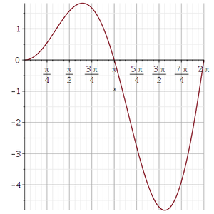
Sometime it is useful to plot the graph of two functions in the same figure. Suppose that we want to plot the graphs of the functions \(x \mapsto x\sin(x)\) and \(x \mapsto x\cos(x)\) for \(x\) between \(-2\pi\) and \(2\pi\) in the same figure. We first plot the graph of the function \(x \mapsto x\sin(x)\) in red and store this graph. We end the Maple command with a colon instead of a semicolon to cancel the display of the graph. After, we plot the graph of the function \(x \mapsto x\cos(x)\) in blue and also store this graph. Finally, we combine both graphs on the same coordinate system using the function display() of the library plots.
> plot1:=plot(x*sin(x),x=-2*Pi..2*Pi,color=red):
> plot2:=plot(x*cos(x),x=-2*Pi..2*Pi,color=blue):
> plots[display]({plot1,plot2});
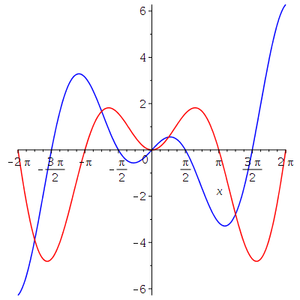
We could as well have used the command
> plot([x*sin(x), x*cos(x)], x = -2*Pi .. 2*Pi, color = [red, blue]);
to obtain the same result. The advantage of the previous approach is the greater flexibility to combine different type of drawings.
For the next example, we want to plot the points \(\displaystyle (x,x^2)\) for \(x=1,2,\ldots,20\). To do that, we have to provide a matrix or a list of points to the function plot. If we provide a matrix, the first column should contains the \(x\) coordinates of the points and the second column should contain the corresponding \(y\) coordinates. We select the option style = point to get the graph of the points only. By default, Maple draws a straight line from one point to the next one; linear interpolation is the standard procedure used by Maple to plot the graph of a function.
> a := seq(x, x = 1 .. 20): > b := seq(x^2, x = 1 .. 20): > plot(<<a>|<b>>, style = point, symbol = circle, gridlines=true);
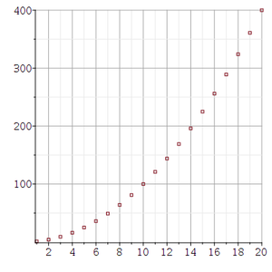
We have also used the option symbol = circle to represent each point by a cycle. We could have used other symbols like box, cross, solidcircle, ...
We will explain in a future document (see ) the matrix notation in Maple.
Instead of a matrix, we may have used a list of points as it is done in the following command.
> plot([seq([x, x^2], x = 1 .. 20)], style = point, symbol = circle, gridlines=true);
To plot the graph of the function \((x,y) \mapsto x\sin(x)\sin(y)\) for \(x\) and \(y\) between \(0\) and \(4\pi\), we use the function plot3d() of Maple.
> plot3d(x*cos(x)*sin(y),x=0..4*Pi,y=0..4*Pi,axes=FRAME,labels=[`x`,`y`,`z`], title = `x*cos(x)*sin(y)`);
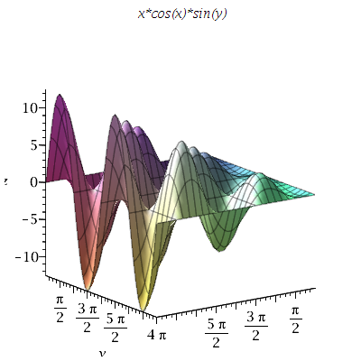
The reader should particularly look at the options that we have used. There are many more options. Please, consult the help menu of Maple to get all the information about the available options for the fonction plot3d.
Two other methods to visualize a function of two variables is the contour and density plots. The Maple functions thaxot implement these methods are densityplot() and contourplot() in the library plots.
> plots[densityplot](x*cos(x)*sin(y),x=0..4*Pi,y=0..4*Pi);
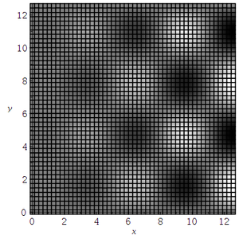
> plots[contourplot](x*cos(x)*sin(y),x=0..4*Pi,y=0..4*Pi,contours=15);
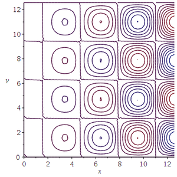
A function defined with by procedure can also be plotted. We illustrate this with the function \(f\) defined by \(f(x,y) = \sin(x+y)+\cos(x+y)\).
> f:=(x,y)->sin(x+y)+cos(x+y): > plot3d(f(x,y),x=0..2*Pi,y=0..2*Pi,axes=FRAME,labels=[`x`,`y`,`z`],title = `f(x,y)`, orientation=[20,45]);
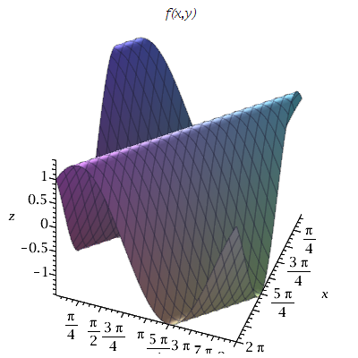
Maple has some libraries specifically designed to draw some geometric figures in three dimensions. plottools and geom3d are two of them.
It is possible with plottools to visualize three dimensional geometric figures. To draw the (surface of the) hemisphere of radius \(3\) centred at \((4,3,4)\) and such that \(z\geq 4\), we proceed as follows. We first draw the hemisphere of radius \(3\) centred at \((4,3,4)\) and open upward.
> with(plottools): > tmp:= hemisphere([4,3,4],3, color=green,capped=false):
After, we reflect the previous hemisphere through the plane \(z=4\). This plane is uniquely defined by any three non-colinear points on it.
> Hemi:=reflect(tmp,[[0,0,4],[1,1,4],[1,0,4]]):
The only think left is to display the resulting hemisphere.
> display(Hemi,style=patch,axes=NORMAL,labels=['x','y','z'],scaling=constrained, orientation=[-25,80]);
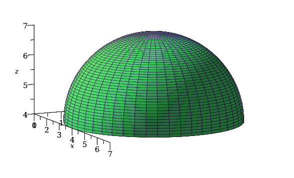
Suppose that we want to draw the intersection of our hemisphere with the plane \(x/2 + y/4 - z = -3\). Since the library plottools does not have a function to draw planes, we use the standard technique to draw planes.
> pl:= plot3d(x/2+y/4+3,x=-1..7, y=-1..7,color=red):
We display this plane and our previous hemisphere in the same figure.
> display({Hemi,pl},style=patch,axes=NORMAL,labels=['x','y','z'],scaling=constrained,
orientation=[-25,80]);
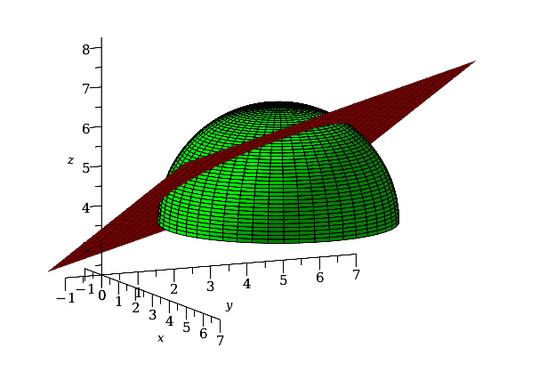
Much more can be done with the library plottools. Our only intention was to mention its existence and display some of its potential. It is left to the reader to read the documentation of this library and to experiment with it.
The Maple library geom3d may also be use to visualize three-dimensional geometric figures. This library is more elaborated than the library plottools. We will simply illustrate its potential with two examples.
For comparison with the library plottools, we use the library geom3d to draw the intersection of the sphere of radius \(3\) centred at \((4,3,4)\) with the plane \(x/2 + y/4 - z = -3\). We begin by drawing the sphere of radius \(3\) centred at \((4,3,4)\). The centre of the sphere is defined by
> restart: with(geom3d): > point(ce,[4,3,4]);\[ ce \]
The sphere is defined by
> sphere(sp,[ce,3],['x','y','z']);\[ sp \]
and draw by the command
> draw(sp(color=blue), orientation=[-45,70],axes=normal);
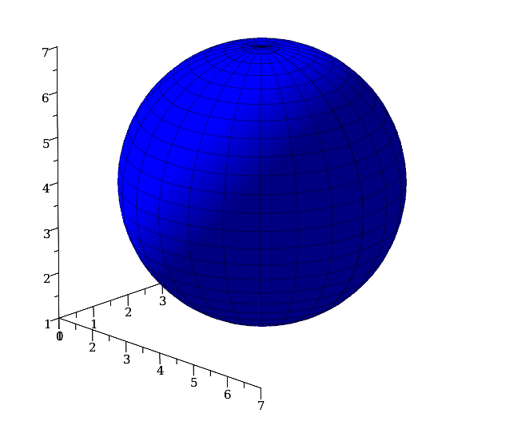
Consider the plane \(x/2 + y/4 - z = -3\).
> plane(pl,x/2+y/4-z=-2,[x,y,z]);\[ pl \]
We can draw the previous sphere and the plane in the same figure with the following command.
> draw({sp(color=yellow),pl(color=red)},orientation=[-45,70],axes=normal);
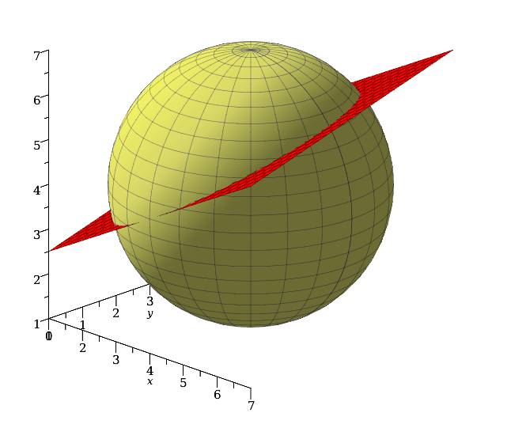
The function intersection() of the library geom3d can find the intersection of two planes. Consider a second plane defined by \(x/2-y/4-z=-2\).
> plane(pll,x/2-y/4-z=-2,[x,y,z]);\[ pll \]
The intersection of the planes defined by pl and pll is given by the following command.
> intersection(inter,pl,pll);\[ inter \]
> detail(inter);\[ \begin{split} \text{Warning, assume that}&\text{ the name of the parameter in the parametric equations is _t}\\ &\text{name of the object: inter}\\ &\text{form of the object: line3d}\\ &\text{equation of the line:}\ \left[x = -4-\frac{\_t}{2}, y = 0, z = -\frac{\_t}{4} \right] \end{split} \]
Since the two planes are not parallel, we find as expected that their intersection is a straight line. Maple gives us the parametric representation of this line.
In the documents listed below, we present some of the libraries that Maple offers.
We have already used the library plots above. Instead of calling each function of a library with a command of the form Library_Name[Function_Name](); as we did for plots[contourplot]() above, it is possible to use only a command of the form Function_Name(); by adding the entire library plots to the context of our session on Maple with the command with(Library_Name); at the beginning of the session. This is generally done in the documents below.